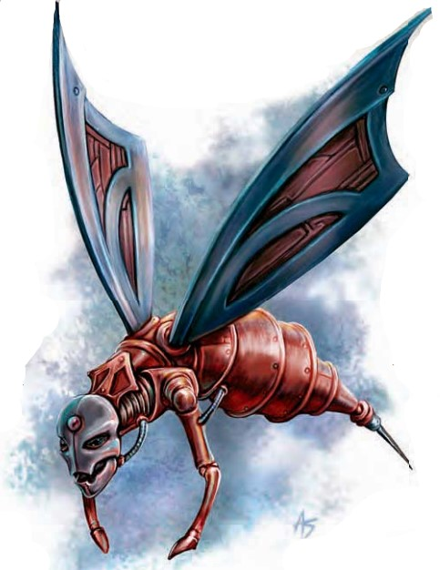

这种微小的机械生物利用像蜂鸟一样的翅膀飞来飞去。它小小的脸大约和人类有些相似，一根尖锐的刺针在它尾巴的末端。
| 资料栏位 | 发条修理匠 超小型构装生物（跨位面，守序） |
|---|---|
| 生命骰 | 1d10（5HP） |
| 先攻 | +4 |
| 速度 | 10尺（2格）；飞行30尺（完美） |
| 防御等级 | 18(+2体型，+4敏捷，+2天生)，接触16，措手不及14 |
| 基本攻击/擒抱 | +0/ -12 |
| 攻击 | 近战 刺针+6(1D2-4 附加毒素) |
| 全力攻击 | 近战 刺针+6(1D2-4 附加毒素) |
| 面宽/触及 | 2.5尺/2.5尺 |
| 特殊攻击 | 阵营攻击（守序），毒素（DC12,1D4敏捷/1D4敏捷） |
| 特殊能力 | 黑暗视觉60尺，昏暗视觉，构装生物免疫，构装体特性，修复之触 |
| 豁免 | 强韧+0，反射+4，意志+1 |
| 属性 | 力量3，敏捷19，体质―，智力4，感知12，魅力10 |
| 技能 | 手艺（任意）+4，躲藏+12，聆听+1，侦查+1 |
| 专长 | 技能专攻（手艺），跳跃攻击，武器娴熟 |
| 环境 | 见后文（未翻） |
| 组织 | 见后文（未翻） |
| 挑战等级 | 1/2 |
| 宝物 | 无 |
| 阵营 | 总是守序中立 |
| 进化 | ― |
| 等级调整 | ― |
发条修理匠生活在机械境的涅��之钟界，扮演着维持整个位面生态的关键角色。制造构装体的主物质位面法爷与术爷寻找它们，使它们作为有效的魔宠与他们造物的守卫者。
描述发条修理匠使用深渊语，天界语和炼狱语（不能说话）。
战斗发条修理匠为修复受损的物体与构装生物而生，但当被激怒时，它们会无畏地攻击任何生物。当修复作业被打扰或当它们被主人命令如此做时，发条修理匠会发动攻击。发条修理匠大多数的时间都在飞行，并且以它们的速度与敏捷优势，用刺针进行打带跑式的攻击。它们首先以非构装生物为目标，在冲向构装生物或不死生物前使用其毒素削弱其对手。如果在战斗中受伤，发条修补匠会对自己使用修复之触能力。
毒素（Ex）：豁免DC包括+2种族加值。
修复之触（Repairing Touch）（Su）：每天一次以一个标准动作，发条修理匠可以接触一件物体或一个构装生物，修复1D8点伤害。
超小型构装生物（跨位面，守序，集群）
| 资料栏位 | 发条修理匠集群 超小型构装生物（跨位面，守序，集群） |
|---|---|
| 生命骰 | 4d10（22HP） |
| 先攻 | +4 |
| 速度 | 10尺（2格）；飞行30尺（完美） |
| 防御等级 | 18(+2体型，+4敏捷，+2天生)，接触16，措手不及14 |
| 基本攻击/擒抱 | +3/ ― |
| 攻击 | 近战 集群（1D6，附加毒素与扰乱心神） |
| 全力攻击 | 近战 集群（1D6，附加毒素与扰乱心神） |
| 面宽/触及 | 10尺/0尺 |
| 特殊攻击 | 阵营攻击（守序），扰乱心神，毒素（DC14,2D4敏捷/2D4敏捷） |
| 特殊能力 | 黑暗视觉60尺，昏暗视觉，构装生物免疫，集群免疫，挥砍和穿刺伤害减半，集群修复，集群牺牲，构装体特性，集群特性 |
| 豁免 | 强韧+1，反射+5，意志+2 |
| 属性 | 力量3，敏捷19，体质―，智力4，感知12，魅力10 |
| 技能 | 手艺（任意）+7，聆听+3，侦查+3 |
| 专长 | 警觉，技能专攻（手艺） |
| 环境 | 见后文（未翻） |
| 组织 | 见后文（未翻） |
| 挑战等级 | 3 |
| 宝物 | 无 |
| 阵营 | 总是守序中立 |
| 进化 | ― |
| 等级调整 | ― |
发条修理匠集群使用深渊语，天界语和炼狱语（不能说话）。
战斗发条修理匠集群更为危险，它们围绕在目标周围，在注射毒素的同时用金属翅膀打击对手。集群的反复自我治疗能力使它尤为致命。
毒素（Ex）：豁免DC包括+2种族加值。
扰乱心神（Ex）：强韧DC12，恶心1轮，豁免DC基于体质。
集群修复（Swarm Repair）（Su）：发条修理匠集群可以选择使用集群攻击却不对构装生物造成伤害。当集群的回合结束时，集群在一个构装生物所在的方格内的话，它可以修复1点该构装生物所受的伤害。如果发条修理匠集群1轮内没有移动，它可以在自己身上使用集群修复。
集群牺牲（Swarm Sacrifice）（Ex）：发条修理匠集群可以选择使用集群攻击却不对构装生物造成伤害。当集群的回合结束时，集群在一个构装生物所在的方格内的话，它可以修复该构装生物的生命值，最多等于集群当时的生命值。集群失去相同数量的生命值，因为集群的成员牺牲了自己以变为修复构装生物的材料。如果集群牺牲能力使得集群的HP下降至0，此集群便解散。
在知识（位面）上有级数的人物可以更多地了解发条修理匠。当人物成功通过技能检定时，以下知识将被揭示，其中包括了更低DC的信息。
| 知识（位面） | 结果 |
|---|---|
| DC 11 | 这种生物是发条修理匠，一种被部分法爷当做魔宠的构装生物。这个结果揭示了其所有构装生物特性。 |
| DC 16 | 发条修理匠是机械境的涅��之钟界的住民。它们致力于修理损坏的物体和其他损坏的构装生物。它们通常是无害的，除非以某种方式被惊吓或妨碍。 |
| DC 21 | 发条修理匠拥有可以注射毒素的刺针。它们有时以上百只组成集群的方式旅行。 |
发条修理匠存在的意义是修复受损的物件与构装体，但在被激怒时会无畏地攻击任何生物。当它们的修理工作受到干扰，或是接到主人的命令时，修理匠便会发起攻击。
发条修理匠大部分时间都在空中活动，利用自身的速度与敏捷优势，俯冲下来用尾刺发动袭扰战术。它们会优先攻击非构装体，先用毒素削弱对手，再转向构装体或不死生物。若在战斗中受伤，发条修理匠会使用自己的"修复接触"能力治疗自身。
遭遇范例发条修理匠在机械境的发条涅��中大量存在，它们在那里维护环境并协助制裁者。它们出现在物质位面时，通常与法师及其他对构装体感兴趣的生物同行。
魔像暴走（EL 8）：一只肉身魔像在创造后几乎立刻陷入狂暴，并杀死了它的主人。它砸烂了那位死去法师的住所，逃到街上横冲直撞，身后跟随着两个发条修补匠集群。这些发条修补匠曾经服务于那位法师，但魔像袭击时它们正在另一个房间，因此不知道主人已死。如今它们忠实地在这位主人的造物周围飞舞，每当它在城中肆意攻击路人而受损时，便对其进行修复。
生态在机械境，发条修理匠致力于修复这个机械化位面的受损部分，治疗其中的构装体居民，竭力维护完美的秩序。由于它们并非起源于主物质位面，因此完全不属于那里的生态系统。一旦被带到主物质位面，发条修理匠很少会离开召唤者的身边，通常都待在室内。
食性发条修理匠在修理过程中会吞食微小的金属碎屑和铁锈。它们的主人通常会留下一些废金属作为食物――一个月内，一只发条修理匠大约会吃掉4磅金属。
繁殖尽管发条修理匠不像活物那样繁衍，但它们可以制造更多的同类。在机械境，集群会按照严格的时间表聚集，将材料运送到长期存在的"交配"场地。在那里，它们会制造出一批新的发条修理匠，数量大约为集群总数的一半。修理匠集群会激烈地守护这一过程，防止任何干扰。迄今为止，发条修理匠从未在机械境之外进行过繁殖；学者们推测，该位面的某种特性才能赋予这些构装体"生命"与心智。
生态环境环境：发条修理匠原产于机械境，但可以在任何环境中找到。它们偏好干燥凉爽的地方――潮湿的环境会让它们烦躁，而沙漠等极热之地则会使它们变得迟钝。
典型外貌：发条修理匠的体型接近一只小猫。它们整体呈黄蜂形，带有尖锐的尾刺，但头部模糊似人形，没有明显的五官。发条修理匠拥有两只极小的手臂，能够进行极其精细的修理工作。
阵营：作为机械境的生物，发条修理匠始终为绝对中立。它们以一心一意的效率执行自己的任务。
为玩家角色提供的资料发条修理匠可能会作为魔宠、人彘或召唤怪物而吸引玩家角色。
作为魔宠的发条修理匠：发条修理匠可以作为进阶魔宠被召唤（见《城主指南》第200页）。施法者必须为守序阵营、至少达到5级，并拥有"进阶魔宠"专长，才能获得发条修理匠魔宠。
召唤发条修理匠：施法者可以使用召唤怪物II或更高级的召唤怪物法术来召唤一只发条修理匠。在召唤怪物表格（《玩家手册》第287页）中，将发条修理匠视为2级召唤列表上的生物。
召唤发条修理匠集群：咒法系（召唤）[守序]；等级：牧师4，术士/法师4；效果：一个发条修理匠集群。该法术如同召唤怪物I一般运作，但你召唤的是一个发条修理匠集群。你可以指挥该集群攻击敌人、使用其集群修复能力，甚至使用其集群牺牲能力。奥术器材：一个破损的金属齿轮。
艾伯伦世界中的发条修理匠在艾伯伦战役设定中，发条修理匠是机关术士的造物。在机关术士聚集的地方，它们相当常见，并且经常伴随机关人术士出现。吉拉尔戈的侏儒广泛使用发条修理匠，一个工坊拥有的修理匠越多，越被视为地位的象征。机关术士可以按照《艾伯伦战役设定集》中的规则，将发条修理匠作为人彘来创造。关于人彘的扩展规则与进化，参见《艾伯伦魔法》。
构造一只发条修理匠由青铜、钢、银、金以及一品脱创造者的血液制成。材料成本为400 gp。制造躯体需要通过DC 15的工艺（锻造）检定。可以制造出生命骰数超过1的发条修理匠，但每增加一个生命骰，制造成本增加2,000 gp。施法者等级：5级；造物专长：制造构装体；所需法术：修复术、修复轻伤；价格：――（从未有售）；成本：1,250 gp + 68 XP。